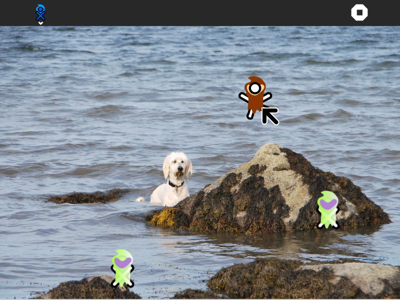
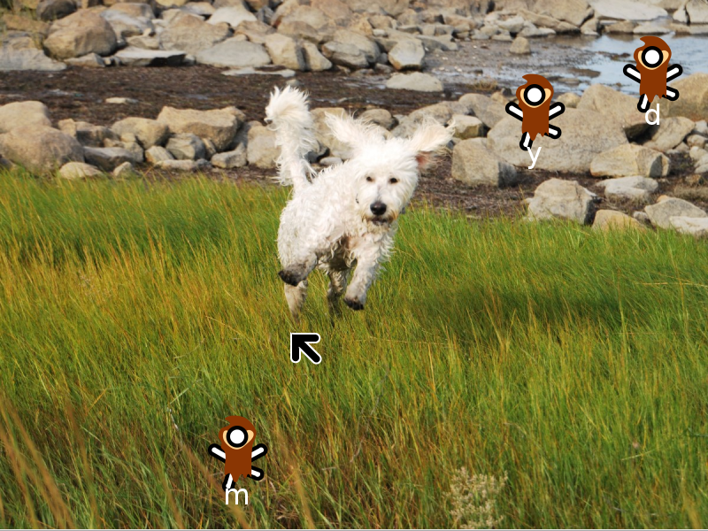

LocoSugar¶
About LocoSugar¶
The LocoSugar Activity is a simple game to introduce the keyboard and mouse to those new to computers.


Where to get LocoSugar¶
The LocoSugar activity is available for download from the Sugar Activity Library: LocoSugar
The source code is available on GitHub.
Using LocoSugar¶
Simply launch the activity and you will be walked through a series of games:
Move the cursor to track a moving target
Move the cursor and click the left mouse button
Move the cursor and click the right mouse button
Drag and drop with the left mouse button
Type lower-case characters
Type upper-case characters
Use Enter and Backspace (Erase)


Learning with LocoSugar¶
LocoSugar is a fun way to get acquainted with the keyboard and mouse.
Modifying LocoSugar¶
Replace the artwork in the image subdirectory with artwork you design.
Replace the sounds
Add new levels of play.
Your suggestions for enhancements and/or use cases…
Where to report problems¶
You can report bugs and make feature requests at locosugar/issues
You are also welcome to leave comments/suggestions.
Credits¶
LocoSugar was written and is maintained by Walter Bender. He was inspired in part by CucoXO. Ignacio Rodriguez came up with the name for the activity. The dog in the pictures is named Clementine. She is a goldendoodle and belongs to my daughter and son-in-law. She is very friendly, but also very bouncy. She loves to swim and chase XOs.